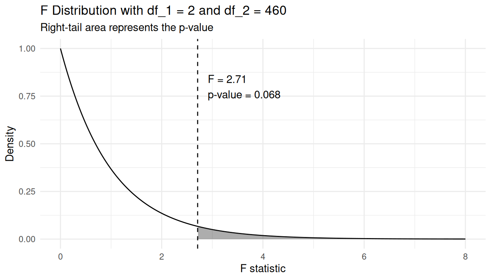
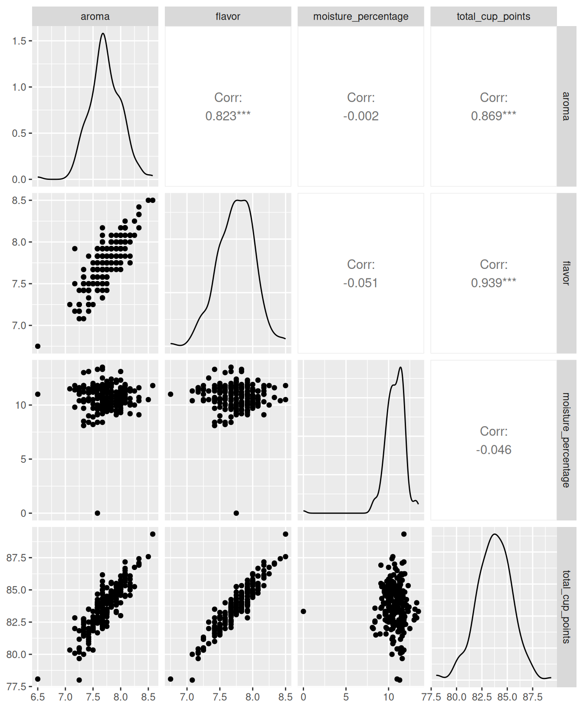

library(tidyverse)
library(moderndive)
library(GGally)13 ANOVA
In Chapter 12, we used two-sample t-tests to compare the means of two groups. This type of test is useful when the explanatory variable is categorical with only two categories, such as comparing exam scores between online and in-person students.
In many studies, however, we want to compare more than two groups at the same time. For example, we may want to compare average salaries across several job sectors or compare average reaction times across multiple treatment groups. In these situations, using multiple two-sample t-tests would be inefficient and could increase the chance of making incorrect conclusions.
Analysis of Variance (ANOVA) extends the ideas of the two-sample t-test to settings with three or more groups. As before, the categorical variable defines the groups and serves as the explanatory variable, while the numerical variable being measured is treated as the response variable. ANOVA helps us determine whether the observed differences among group means are larger than we would expect from natural variability alone.
ANOVA can be viewed as a generalization of the two-sample t-test to more than two groups.
Packages Needed
Let’s load all the packages needed for this chapter (this assumes you’ve already installed them). If needed, read Section 1.3 for information on how to install and load R packages.
13.1 One way ANOVA
ANOVA, or analysis of variance, is a statistical technique used to compare the means of three or more groups. Rather than comparing groups two at a time, ANOVA evaluates whether there is evidence that at least one group mean differs from the others.
Recall the evals dataset loaded in the moderndive package containing student evaluations for professors from the University of Texas at Austin. Suppose we want to compare the average evaluation score across professors of different rank, specifically teaching, tenure track, and tenured professors. Because we are considering only one explanatory variable (rank), this method is called a one-way ANOVA.
We use the slice_sample() function after selecting the variables of interest to display a few rows of this data frame in Table @tbl-evals-for-anova-slice-five.
evals_for_anova <- evals |>
select(ID, prof_ID, score, rank) evals_for_anova |>
slice_sample(n = 5)evals_for_anova
| 309 | 59 | 3.6 | tenure track |
| 10 | 4 | 4.5 | tenured |
| 429 | 86 | 3.9 | tenured |
| 334 | 67 | 3.7 | tenured |
| 184 | 34 | 3.5 | tenure track |
Let’s conduct a hypothesis test at the \(\alpha = 0.05\) significance level:
\[H_0: \mu_{teaching} = \mu_{tenure-track} = \mu_{tenured}\] \[H_A: \hbox{at least one population mean differs}\]
The null hypothesis states that all population mean evaluation scores are equal across professor ranks. The alternative hypothesis states that at least one population mean is different.
In R, we use the aov() function to fit a one-way ANOVA model.
evals_aov_model <- aov(score ~ rank, data = evals_for_anova)evals_aov_model
summary(evals_aov_model) Df Sum Sq Mean Sq F value Pr(>F)
rank 2 1.6 0.795 2.71 0.068 .
Residuals 460 135.1 0.294
---
Signif. codes: 0 '***' 0.001 '**' 0.01 '*' 0.05 '.' 0.1 ' ' 1The test statistic for examining the null hypothesis is called the F-statistic. The F-statistic compares:
- variability between group means
- variability within groups
If the variability between groups is large relative to the variability within groups, then the observed group differences provide stronger evidence against the null hypothesis.
The F-statistic is computed as the mean square for groups divided by the mean square error:
\[ F = \frac{\text{MS}_{\text{between}}}{\text{MS}_{\text{within}}} = \frac{ \frac{ \sum_{j=1}^{k} n_j(\bar{y}_j-\bar{y})^2 }{k-1} }{ \frac{ \sum_{j=1}^{k}\sum_{i=1}^{n_j}(y_{ij}-\bar{y}_j)^2 }{n-k} } \]
where \(k\) is the number of groups, \(n\) is the sample size, \(\bar{y}_j\) is the mean for group \(j\), and \(\bar{y}\) is the overall sample mean. The associated degrees of freedom are \(df_1 = k - 1\) and \(df_2 = n - k\).
In practice, however, statistical software computes the F-statistic automatically. The ANOVA output in Table Table 13.2 reports an F-statistic of 2.71.
Because there are three groups, the numerator degrees of freedom are \(df_1 = 3 - 1 = 2\) and because there are 463 observations total, the denominator degrees of freedom are \(df_2 = 463 - 3 = 460\). Notice that the p-value is represented by the upper tail area of the F-distribution to the right of the observed F-statistic.

Since the p-value of 0.068 is greater than our significance level of \(\alpha = 0.05\), we fail to reject the null hypothesis. Thus, the data do not provide sufficient evidence to conclude that the mean evaluation scores differ across teaching, tenure-track, and tenured professors.
To better understand the group differences, we can compute the sample mean evaluation score for each professor rank.
mean_score_by_rank <- evals_for_anova |>
group_by(rank) |>
summarize(mean_score = mean(score),
sd_score = sd(score),
n = n())
mean_score_by_rank# A tibble: 3 × 4
rank mean_score sd_score n
<fct> <dbl> <dbl> <int>
1 teaching 4.28 0.498 102
2 tenure track 4.15 0.561 108
3 tenured 4.14 0.550 25313.1.1 Hypothesis test for model comparison
Another useful hypothesis test in multiple linear regression compares two models: one with a given set of explanatory variables called the full model and the other with only a subset of those explanatory variables called the reduced model.
To illustrate these methods, we use the coffee_quality data frame from the moderndive package. This dataset from the Coffee Quality Institute contains information about coffee rating scores based on ten different attributes: aroma, flavor, aftertaste, acidity, body, balance, uniformity, clean_cup, sweetness, and overall. In addition, the data frame contains other information such as the moisture_percentage and the coffee’s country and continent_of_origin. We can assume that this is a random sample.
We plan to regress total_cup_points (response variable) on the numerical explanatory variables aroma, flavor, and moisture_percentage. This will be our full model.
We will then regress total_cup_points (response variable) on only the explanatory variables aroma and flavor. This is called a reduced model because it contains only a subset of the explanatory variables from the full model..
Before proceeding, we construct a new data frame called coffee_data by keeping the variables of interest.
coffee_data <- coffee_quality |>
select(aroma,
flavor,
moisture_percentage,
total_cup_points)The first ten rows of coffee_data are shown here:
coffee_data# A tibble: 207 × 4
aroma flavor moisture_percentage total_cup_points
<dbl> <dbl> <dbl> <dbl>
1 8.58 8.5 11.8 89.3
2 8.5 8.5 10.5 87.6
3 8.33 8.42 10.4 87.4
4 8.08 8.17 11.8 87.2
5 8.33 8.33 11.6 87.1
6 8.33 8.33 10.7 87
7 8.33 8.17 9.1 86.9
8 8.25 8.25 10 86.8
9 8.08 8.08 10.8 86.7
10 8.08 8.17 11 86.5
# ℹ 197 more rowsBy looking at the fourth row we can tell, for example, that the total_cup_points are 87.17 with aroma score equal to 8.08 points, flavor score equal to 8.17 points, and moisture_percentage equal to 11.8%.
When performing multiple regression it is useful to construct a scatterplot matrix, a matrix that contains the scatterplots for all the variable pair combinations. In R, we can use the function ggpairs() from package GGally to generate a scatterplot matrix and some useful additional information. In Figure 13.1, we present the scatterplot matrix for all the variables of interest.
coffee_data |>
ggpairs()
We first focus on the plots with the response variable (total_cup_points) on the vertical axis. They are located in the last row of plots in the figure. When plotting total_cup_points against aroma (bottom row, leftmost plot) or total_cup_points against flavor (bottom row, second plot from the left), we observe a strong and positive linear relationship. The plot of total_cup_points against moisture_percentage (bottom row, third plot from the left) does not provide much information and it appears that these variables are not associated in any way, but we observe an outlying observation for moisture_percentage around zero. It is often useful to also find any linear associations between numerical explanatory variables as is the case for the scatterplot for aroma against flavor which suggests a strong positive linear association. By contrast, almost no relationship can be found when observing moisture_percentage against either aroma or flavor.
The function ggpairs() not only produces these plots, but includes the correlation coefficient for any pair of numerical variables. In this example, the correlation coefficients support the findings from using the scatterplot matrix. The correlations between total_cup_points and aroma (0.87) and total_cup_points and flavor (0.94) are positive and close to one, suggesting a strong positive linear association. Recall that the correlation coefficient is relevant if the association is approximately linear. The correlation between moisture_percentage and any other variable is close to zero, suggesting that moisture_percentage is likely not linearly associated with any other variable (either response or regressor). Note also that the correlation between aroma and flavor (0.82) supports our conclusion of a strong positive association.
Using the coffee_data example, suppose that the full model is:
\[Y = \beta_0 + \beta_1 \cdot X_1 + \beta_2 \cdot X_2 + \beta_3 \cdot X_3 + \epsilon\] where \(\beta_1\), \(\beta_2\), and \(\beta_3\) are the parameters for the partial slopes of aroma, flavor, and moisture_percentage, respectively. The multiple linear regression outcomes using the coffee_data dataset on this model are stored in the object mod_mult_1.
mod_mult_1 <- lm(
total_cup_points ~ aroma + flavor + moisture_percentage,
data = coffee_data
)The reduced model does not contain the regressor flavor and is given by
\[Y = \beta_0 + \beta_1 \cdot X_1 + \beta_3 \cdot X_3 + \epsilon.\] The multiple linear regression output using this model is stored in the object mod_mult_2.
mod_mult_2 <- lm(
total_cup_points ~ aroma + moisture_percentage,
data = coffee_data
)The hypothesis test for comparing the full and reduced models can be written as:
\[\begin{aligned} H_0:\quad &Y = \beta_0 + \beta_1 \cdot X_1 + \beta_3 \cdot X_3 + \epsilon\\ H_A:\quad &Y = \beta_0 + \beta_1 \cdot X_1 + \beta_2 \cdot X_2 + \beta_3 \cdot X_3 + \epsilon \end{aligned}\]
or in words:
\[\begin{aligned} H_0&:\quad \text{the reduced model is adequate}\\ H_A&:\quad \text{the full model is needed} \end{aligned}\]
This test is called an ANOVA test or an \(F\)-test, because the distribution of the test statistic follows an \(F\) distribution. The test compares the residual variation from the full and reduced models. If the full model reduces the residual variation substantially, then the additional explanatory variables improve the model fit.
To get the result of this test in R, we use the R function anova() and enter the reduced model followed by the full model with Table @ref(tab:mult-model-4) providing information for this test.
anova(mod_mult_2, mod_mult_1) | Res.Df | RSS | Df | Sum of Sq | F | Pr(>F) |
|---|---|---|---|---|---|
| 204 | 149.9 | ||||
| 203 | 55.1 | 1 | 94.8 | 350 | 0 |
The test statistic is given in the second row for the column F. The test statistic is \(F =349.6\) and the associated \(p\)-value is near zero. In conclusion, we reject the null hypothesis and conclude that the full model was needed.
13.2 Exercises
13.2.1 Conceptual
Exercise 13.1 In a one-way ANOVA, what does the null hypothesis state?
- All observations in the dataset are equal.
- All population group means are equal.
- All sample group means are equal.
- At least one population group mean differs.
Exercise 13.2 Suppose a one-way ANOVA produces a very large F-statistic. What does this suggest?
- The variability within groups is large compared to the variability between groups.
- The explanatory variable is categorical.
- The variability between groups is large relative to the variability within groups.
- The response variable has a normal distribution.
Exercise 13.3 What does the ANOVA test for comparing two models in multiple linear regression evaluate?
- Whether all explanatory variables in both models have the same coefficients.
- Whether the reduced model is adequate or if the full model is needed.
- Whether the residuals of the two models follow a normal distribution.
- Whether the regression coefficients of one model are unbiased estimators.
Exercise 13.4 In the ANOVA test for comparing a full and reduced regression model, what does the reduced model represent?
- A model with transformed explanatory variables.
- A model that contains all explanatory variables from the full model.
- A model that contains only a subset of explanatory variables from the full model.
- A model fit using fewer observations.
13.2.2 Application
Exercise 13.5 Using the spotify_by_genre dataset from the moderndive package, consider only the genres of country, hip-hop, and rock.
Conduct a one-way ANOVA test to determine if there is a difference in mean popularity between these three genres.
Evaluate at the \(\alpha = 0.02\) significance level.
Exercise 13.6 Using the spotify_by_genre dataset from the moderndive package, first restrict our attention to only the following four genres: “rock”, “pop”, “jazz”, and “classical”.
Suppose we want to investigate factors associated with song popularity. Build a multiple regression model that predicts popularity with the following explanatory variables: danceability, energy, and track_genre.
To determine whether danceability and energy improve prediction of popularity build a reduced model that only uses the explanatory variable track_genre.
Conduct an ANOVA test to determine if the full or reduced model is better at the \(\alpha = 0.10\) significance level.